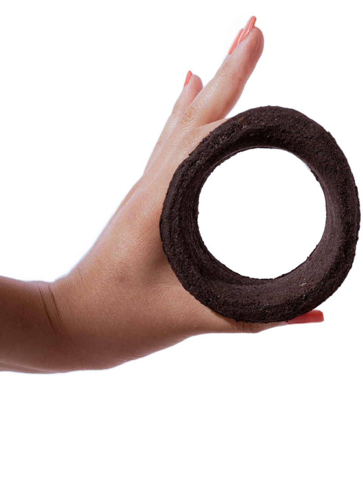

Billions of takeaway cups are used every year...
Every minute, 5,300 disposable hot drink cups are used in Germany alone. This equates to 2.8 billion cups of waste per year.
↓
Every coffee-to-go produces around 11 grams of coffee grounds

Multiplied by 2.8 billion cups a year, that's over 30,000 tonnes of coffee-grounds discarded annually.
↓
GoBean uses this waste to make something new...

Not another reusable cup — but the little ring around your hot drink that keeps your fingers from burning: a cup-sleeve!